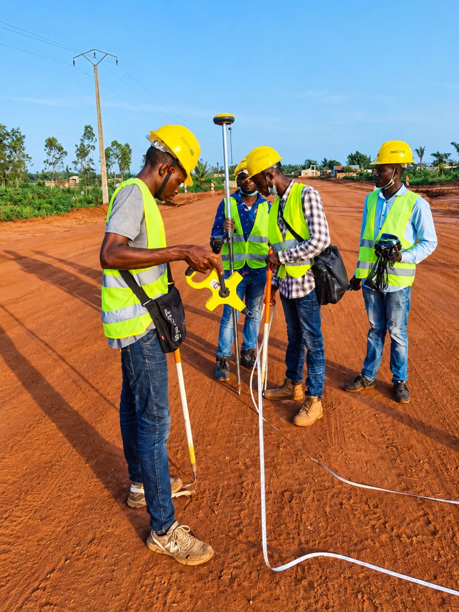
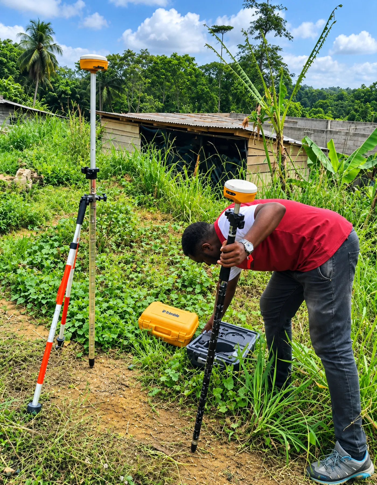
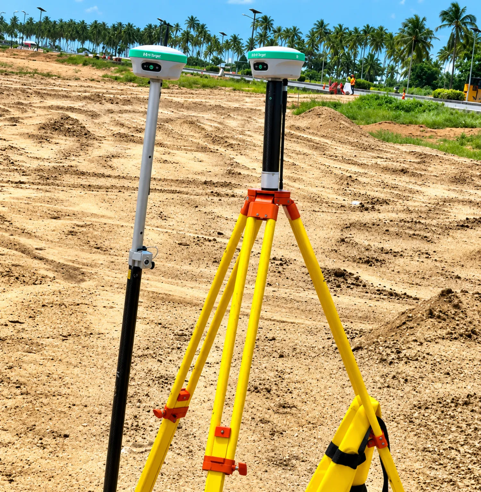
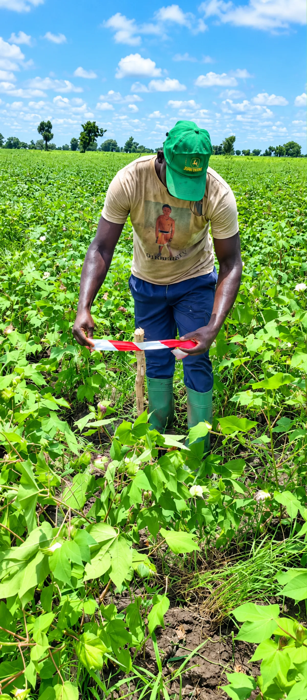
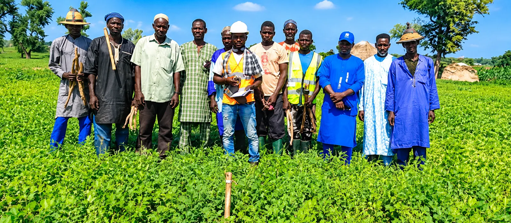

Levée topographique
Relevé précis de votre terrain : reliefs, limites, bâtis et réseaux existants. Vous obtenez un plan fidèle, base indispensable de tout projet.

Des solutions topographiques fiables pour sécuriser vos projets fonciers et de construction partout au Bénin, du premier relevé jusqu'au suivi de chantier.

Topo Ange est une entreprise spécialisée dans les prestations topographiques, intervenant sur toute l'étendue du territoire national du Bénin. Nous accompagnons particuliers, propriétaires fonciers, promoteurs immobiliers et entreprises de BTP avec des relevés fiables et des conseils clairs.
Notre démarche repose sur une parfaite connaissance du terrain, une rigueur méthodique et un sens du détail : chaque mesure est réalisée avec précision pour vous apporter des données exactes, exploitables et opposables. De la première prise de contact jusqu'à la livraison, nous restons à vos côtés.
Sept expertises pour couvrir tous vos besoins, du relevé de précision à la surveillance de vos chantiers de construction.
Relevé précis de votre terrain : reliefs, limites, bâtis et réseaux existants. Vous obtenez un plan fidèle, base indispensable de tout projet.
Découpage de votre parcelle en lots conformes et bien délimités, pour vendre, partager ou lotir en toute sécurité juridique.
Repositionnement exact des bornes disparues ou déplacées à partir des documents officiels, pour rétablir les limites réelles de votre propriété.
Mesure fine des altitudes et des pentes de votre terrain. Essentiel pour l'assainissement, les fondations et la bonne gestion des eaux.
Report précis des plans de l'architecte sur le terrain. Vos ouvrages sont positionnés au bon endroit, aux bonnes dimensions, dès le départ.
Vous ne retrouvez plus la position de votre terrain ? Nous le localisons précisément à partir de vos titres et le rematérialisons sur le terrain.
Surveillance topographique de vos projets de construction : contrôle des implantations et des niveaux à chaque étape, jusqu'à l'achèvement.
Décrivez-nous votre projet foncier ou de construction : nous vous proposons la solution adaptée.
Demander un devis →Une méthode claire et transparente, pensée pour vous faire gagner du temps et de la sérénité.
Vous nous exposez votre projet par téléphone, WhatsApp ou via le formulaire. Une première écoute gratuite.
Nous étudions vos documents et votre terrain pour définir la prestation la plus juste et vous remettre un devis.
Nos équipes réalisent les mesures avec des équipements de précision, partout au Bénin.
Vous recevez des documents exploitables et notre accompagnement se poursuit tout au long de votre projet.

Nos interventions s'appuient sur des équipements de terrain modernes et des méthodes éprouvées pour garantir l'exactitude de chaque mesure, dans toutes les conditions.
Quelques images de nos équipes et de nos interventions, au plus près des projets de nos clients.


Des atouts concrets qui font la différence sur chacun de vos projets.
Des mesures exactes et contrôlées, pour des données fiables sur lesquelles vous pouvez bâtir en confiance.
Où que se trouve votre terrain, nos équipes se déplacent sur toute l'étendue du territoire national.
Un interlocuteur à votre écoute, qui adapte chaque prestation à votre situation et à vos objectifs.
Une parfaite connaissance des réalités du terrain béninois, du relief aux contraintes locales.
Une méthode stricte et des documents soignés, conformes aux exigences de vos démarches.
Nous restons présents à chaque étape, de la première mesure jusqu'à l'achèvement de votre chantier.
Disponible sur toute l'étendue du territoire national. Où que se situe votre terrain ou votre chantier, Topo Ange se déplace pour réaliser vos travaux topographiques.
Parlons de votre projet. Nos experts vous répondent rapidement et vous accompagnent dès les premières mesures.
Remplissez le formulaire ou contactez-nous directement par téléphone et WhatsApp. Réponse rapide garantie.